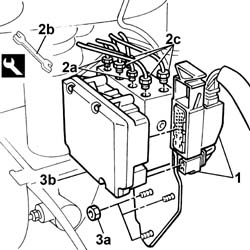
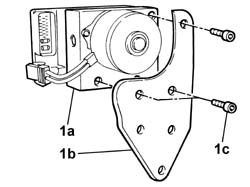

3340A12 A'B.S. system. - electronic and hydraulic CONTROL UNIT R.R.
- Path
- Procedures > 33 BRAKES > 3340 A(B.S. ANTI-LOCK BRAKING SYSTEM .) > 3340A abs check/adjustment devices > 3340A12 A'B.S. system. - electronic and hydraulic CONTROL UNIT R.R.
- Kind
- repair procedure (removal / refitting; the operation number is the code)
- Applies to
- all engines; all production periods
- Interactive page
- https://sloeber94.github.io/elrnDB-fDbl/en/#/2584683
Applies to: all engines; all production periods
 Removing
Removing
 Refitting
RefittingOpen the bonnet.
Op. 5530B52 BATTERY SUPPORT/DRIP TRAY - R.R..
1. Disconnect the electrical connections from the ABS control unit.
Name | Connector | |
|---|---|---|
1 | ABS control unit |
2. Unscrew brake pipe connectors (2a) on the hydraulic control unit using wrench (2b) and unscrew connectors (2c) using a fixed 13 mm wrench.
 | Name | Country |
|---|---|---|
2b | Box wrench for brake fittings | 1.856.132.000 |
3. Unscrew nuts (3a) securing ABS control unit bracket to the body, then remove the control unit and bracket.

Applies to: all engines; all production periods
1. Working at the bench, separate ABS control unit (1a) from bracket (1b) by undoing retaining bolts (1c).

Applies to: all engines; all production periods
Refitting
RemovingPlace the ABS control unit on the bracket and secure with bolts.
Position the ABS control unit complete with support bracket in the car.
Tighten the nuts securing the ABS control unit bracket to the body.
 | Fastening | Component | Ø | Value (daNm) |
|---|---|---|---|---|
- | Nut | HYDRAULIC AND ELECTRONIC CONTROL UNIT | M8 | (On bodyshell) 2.5 |
Connect the brake pipe connectors to the hydraulic control unit using wrenches.
| Name | Country |
|---|---|---|
- | Box wrench for brake fittings | 1.856.132.000 |
| Fastening | Component | Ø | Value (daNm) |
|---|---|---|---|---|
- | Connector | PIPE FROM CONTROL UNIT TO FRONT BRAKES | M10 x 1 | 1.4 |
Connect the electrical connectors to the ABS electronic control unit.
 | Name | Connector |
|---|---|---|
- | ABS control unit |
Op. 5530B52 BATTERY SUPPORT/DRIP TRAY - R.R..
Op. 0010T64 BRAKE AND/OR CLUTCH FLUID CHECK LEVEL AND TOP UP AS NECESSARY.
Op. 0010T65 HYDRAULIC BRAKE SYSTEM - BLEED AIR.
Op. 0010T66 EXTRAS FOR VERSIONS WITH ABS FOLLOWING OPERATION 0010T65.
Close the bonnet lid.
Topics linked from this page (6)
- 0010T64 brake and or clutch fluid check level and top up as necessary
- 0010T65 hydraulic brake system bleed air
- 0010T66 manual gearbox oil check level and top up if necessary
- 5530B10 battery - r+r
- 5530B52 Battery DRIP TRAY/SUPPORT - R.R.
- M50 ABS CONTROL UNIT ( FRONT )